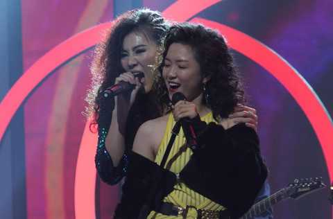
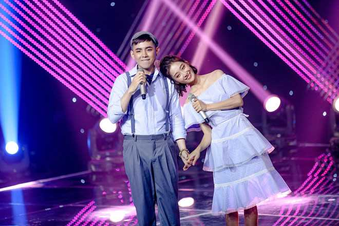
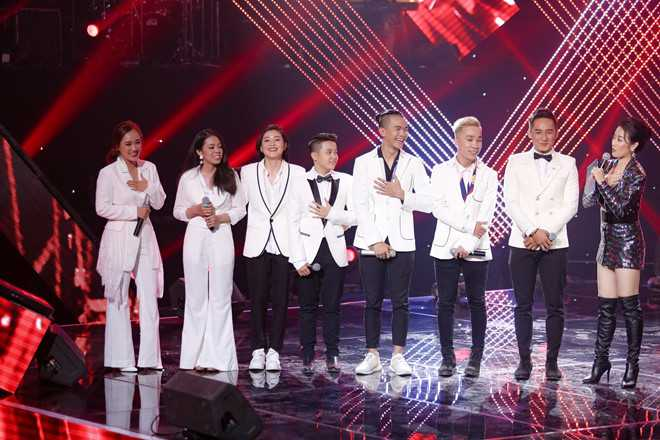
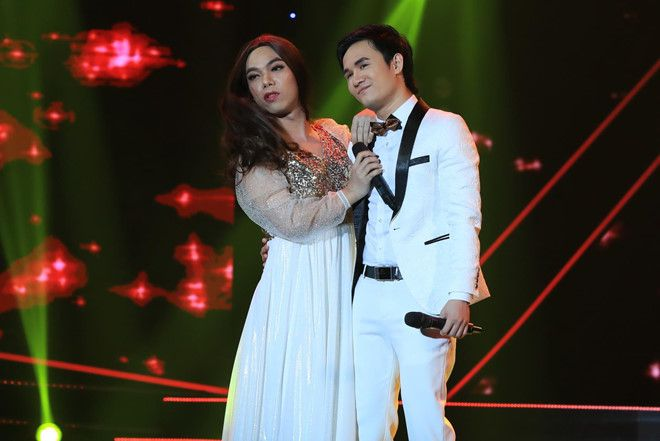

Anh nhận xét nhóm S2 và Mystery hát nhạc Trịnh chưa tốt. Cách hát rời rạc của thí sinh đội Hồ Hoài Anh khiến nam HLV không hài lòng.
Chiếc ghế nóng đặc biệt nhất chương trình thuộc về Hồ Hoài Anh. Vòng Đối đầu, anh tự chọn cách thức lựa chọn thí sinh cho đội mình. Cụ thể, trước khi chính thức bước vào vòng thi, anh đưa học trò tới ký túc xá Đại học Quốc gia và biểu diễn trước khán giả. Ý định ban đầu, anh muốn chọn ra ba thí sinh chinh phục khán giả tốt nhất để vào vòng trong. Cuối cùng, một phút yếu lòng khiến huấn luyện viên (HLV) thay đổi quyết định. Tất cả thí sinh có thêm cơ hội ở vòng Đối đầu.
Hồ Hoài Anh thông minh trong việc dàn dựng tiết mục. Anh chọn bài phù hợp để học trò tỏa sáng bằng cá tính của riêng mình. Dù không tránh khỏi những lỗi nhỏ về giọng hát, cách xử lý nhưng các tiết mục của đội nam HLV đều được đồng nghiệp khen ngợi. Đặc biệt, phần thi đội anh mang lại cảm giác thoải mái, nhiều năng lượng hơn là sự nặng nề, áp lực thi đấu.
Đội Hồ Hoài Anh dù đặc biệt nhưng yếu thế về hiệu ứng truyền thông. Thí sinh đội anh đều là trường hợp không được ba HLV còn lại chọn lựa, ngoại trừ Juky San. Cô nổi tiếng trên mạng xã hội từ trước cuộc thi nhờ những bản cover trong trẻo và ngoại hình xinh đẹp.
Ở phần thi trước khán giả Đại học Quốc gia, cô cũng là thí sinh đầu tiên được Hồ Hoài Anh gọi tên, chắc chắn vào vòng trong.
Với phần thi Đối đầu, Juky San và Huỳnh Công Luận thể hiện Thời thanh xuân sẽ qua - một sáng tác của Phạm Hồng Phước. Màn trình diễn nhẹ nhàng, ngọt ngào và bình yên đúng như những ca từ của bài hát. “Đồi xanh thơm mát những lá trà/ Trong lành hát những khúc ca/ Hương chiều quê nghe lúa thơm tình ta”. Juky San hát ngọt ngào, mộc mạc. Cô tạo cảm giác thoải mái cho người nghe qua chất giọng trong trẻo.

Juky San và Công Luận đáng yêu như một cặp đôi thực sự.
"Yêu quá", Thanh Hà thốt lên trước sự ăn ý của hai thí sinh. "Chị cảm thấy thoải mái khi hai em diễn. Juky San rất tự nhiên và hoàn toàn làm chủ. Vừa hát, vừa diễn, thỉnh thoảng em cười khiến chị hoàn toàn yêu mến tiết mục của hai em".
Tuấn Hưng thừa nhận anh thích thú khi theo dõi. Tuy nhiên, anh đánh giá cả hai chưa tiết chế được cảm xúc, dẫn đến đôi chỗ "lệch quỹ đạo".
Hồ Hoài Anh đồng tình với người bạn thân. Anh cho biết hai thí sinh thể hiện chưa tốt bằng lúc diễn tập. Tuy nhiên, anh không đặt nặng áp lực mà muốn học trò trình diễn thoải mái, gạt vấn đề thi đấu, cạnh tranh sang một bên.
Nhóm S2 và Mystery làm mới âm nhạc của cố nhạc sĩ Trịnh Công Sơn. Hai ca khúc Để gió cuốn đi và Hãy yêu nhau đi được thể hiện bằng bản mashup và giọng hát mới mẻ. Có tới 7 người nên bè phối là thử thách lớn với nhóm thí sinh.
Tuy nhiên, theo nhận xét của Thanh Hà, họ giải quyết tốt bài toán này. “Chị từng khuyên các em tiết chế, hát bớt gào rú. Anh Hồ Hoài Anh đã giúp các em làm được điều đó”, nữ HLV nhận xét. Cô nói thêm: “Chị không nghĩ các em sẽ hát nhạc Trịnh Công Sơn. Các em làm rất tốt”.

Học trò Hồ Hoài Anh hạnh phúc khi nghe lời khen của hai HLV, trước khi đến với góp ý trái chiều của Tuấn Ngọc.
Riêng Tuấn Ngọc có ý kiến ngược lại: "Các em chưa thoải mái, câu hát rời rạc, cách hát có thể tốt hơn".
Đáp lại bình luận của đàn anh, Hồ Hoài Anh giải thích: "Em luôn thích sự tương phản, ví dụ với bài hát mới, có người sẽ hát theo lối opera".
"Một người đã đành, đây là 7 người hát. Không thể nào để tất cả hòa hợp với bài hát. Thế nhưng, em vẫn muốn cho khán giả thấy được cá tính của từng người", anh nói thêm.
Lúc này, HLV Tuấn Ngọc xin cắt lời và đưa ra ví dụ là Lady Gaga. Theo anh, khi hát sang bất cứ dòng nhạc nào, nữ ca sĩ nổi tiếng thế giới đều hát theo cách của mình nhưng chạm đến trái tim khán giả. Anh nhấn mạnh rằng có nhiều hướng để hát một bài hát nhưng cách xử lý cần trau chuốt, thoải mái.
Kết thúc tập thi, Hồ Hoài Anh chọn Juky San và Công Luận vào vòng tiếp theo. Những thí sinh còn lại phải vượt qua thử thách mới do chính anh đặt ra để giành cơ hội đồng hành cùng chương trình. Cụ thể, họ tự chọn một ca khúc, quay video thể hiện sự sáng tạo trong cách hát, dàn dựng… để làm bài thi quyết định việc ai đi, ai ở.

Minh Phúc hóa thân thành Minh Tuyết thể hiện bản hit của thần tượng. Tuy nhiên, đến khi thể hiện ca khúc thứ 2 "Vị ngọt đôi môi", giám khảo đánh giá anh giống Hồ Ngọc Hà hơn.